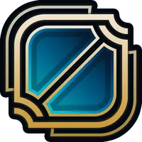
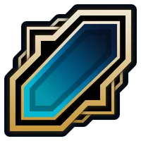

롤이란
라이엇 게임즈가 개발 및 서비스 중인 MOBA 장르의 게임. 게임 명칭의 앞 철자들을 따서 LoL(롤), 영어권에서는 League 등의 약칭으로도 불린다.
이전까지 있었던 MOBA(AOS) 게임들보다 진입 장벽을 낮추는 것으로 높은 인기를 얻었고 현재는 전 세계에서 많은 유저들을 보유중인데 PC 게임 중 전 세계에서 많이 플레이하는 게임 중 하나이며 2016년 기준 월 플레이어 수 1억 명 이상을 달성했고, 2019년 8월 기준 하루 전 세계 서버의 피크 시간 동시 접속자 수를 합치면 800만 명 이상이다. 또한 전 세계 E스포츠 대회 중 가장 많은 시청자 수 기록을 보유 중인 리그 오브 레전드 월드 챔피언십과 각 지역 리그 등 수많은 e스포츠 대회가 많이 개최되는 중이다. 그리고 2018 자카르타·팔렘방 아시안 게임에서 공식 시범 종목으로 채택되기도 했다.
대한민국에서는 언제나 PC방 점유율 1위를 놓치지 않는 최고의 인기 PC게임으로, 주로 청소년층과 젊은 성인층을 중심으로 꾸준히 사랑받고 있어 단순히 PC게임을 넘어 청소년 문화를 상징하는 요소 중 하나로 자리매김하였다.
소환사의 협곡

리그 오브 레전드의 대표적 전장인 소환사의 협곡은 가장 많은 플레이어들이 선호하는 전장입니다.
각 다섯 명의 챔피언으로 두 팀을 구성하여, 세 갈래 공격로와 넓은 정글을 오가며 교전을 펼치게 됩니다.
정글에는 강력한 효과를 부여해 주는 중립 몬스터들이 포진해 있습니다. 공격로 대치 단계가 길고, 대규모 팀간 전투가 벌어지는 것이 가장 큰 특징입니다.
칼바람 나락

중립 지역이 없고 공격로가 단 하나다. 그래서 다른 맵들과 다르게 게임 시작부터 끝까지
한타와 대치의 중요도가 매우 높은 맵이며 상대적으로 훨씬 빨리 끝난다.
전략적 전투
2019년 6월 11일 공개된 리그 오브 레전드의 새로운 모드의 게임. 공식 명칭은 Teamfight Tactics, 줄여서 TFT다.
한국어로는 전략적 팀 전투이며, 커뮤니티에선 롤토체스(롤+오토 체스), 더 줄여서 롤토나 롤체로 불린다.
오토배틀러(Auto Battler, 자동 전투)라는 게임 장르의 명칭을 만든 게임이다. 정확히는 원조가 되는 오토 체스는 이름 그대로 불리고 따로 장르를 지정하지 않았으며, 라이엇 게임즈에서 TFT를 처음으로 장르명으로 호칭했다.
장르부터 완전히 다른 사실상 별개의 게임이지만, 일단은 리그 오브 레전드의 소스로 만든 게임 모드인지라 일반 게임에서처럼 채팅이나 감정 표현 등이 가능하다. 다만 소환사 경험치를 얻을 수는 없다.
개요
볼링(Bowling)은 공을 손으로 바닥에 굴려 실력을 겨루는 구기종목을 포괄적으로 부르는 명칭으로, 대한민국에서는 보통 볼링이라 하면 레인 끝에 있는 10개의 핀을 공을 굴려 넘어뜨리는 '텐핀 볼링'을 의미한다. 따라서 이 문서도 텐핀 볼링을 중심으로 서술되어 있다.
보통은 레저 스포츠로 분류되며, 올림픽 종목은 아니지만 아시안 게임과 데플림픽에서는 정식 종목이다. 그래서 월드 게임에도 해당 종목이 있다.
얼핏 보기엔 쉬워 보이지만, 어떤 스포츠든 기본적인 매커니즘과 테크닉이 수반되지 않으면 높은 점수를 받을 수가 없고 볼링 역시 예외는 아니다. 초보자가 무턱대고 레인에 오르면 거터로만 굴러가는 볼링공을 보며 좌절하는 자신을 발견하게 된다. 심지어 프로 선수들조차 종종 스페어 커버를 하지 못하는 경우가 발생한다. 그만큼 마인드 컨트롤과 숙련도, 기초 운동신경이 중요한 스포츠다.
투구법
클래식
엄지, 중지, 약지를 넣고 투구하는 정석적인 자세이다. 팔꿈치가 펴지고 손목을 커핑된 상태를 계속 유지하고 릴리즈하는 자세이며 대부분이 스트로커 구질을 가진다. 아대를 사용하는 볼러들이 많고 한국 여자선수들이 주로 구사한다. 높은 rpm을 통한 핀액션에서의 이점으로 레인을 공략하는 크랭커와는 다르게 정확도와 일관성에서 강점을 가지지만 현대 볼링공들의 성능과 레인 정비 패턴들에서의 한계가 명확하기에 대한민국 혹은 미국 pba의 정상급 선수들은 대부분 로테이션을 활용하여 트위너, 크랭커의 구질을 구사한다
크랭커 (털어치기,로테이션)
엄지, 중지, 약지를 넣는 쓰리 핑거의 자세중 하나로 릴리즈 전에 커핑을 만들고 풀어주며 높은 회전량을 만드는 자세이다. 비교적 낮은 rpm의 트위너, 높은 rpm의 크랭커, 높은 rpm에 높은 구속으로 크랭커의 약점을 보완하는 파워 스트로커 등 볼러의 역량에 따라 다양한 구질을 구사할 수 있다. pba나 대한민국 실업 볼링 대회를 보면 쉽게 볼 수 있는 구질이다. 볼링을 치는 동호인의 로망이자 볼링의 꽃! 투핸드는 흉내라도 내보겠는데 털어는 흉내도 못 낸다. 난이도와 연습 과정에서의 부상위험 모두 최상이며, 대한민국 대부분의 볼링장 내에서 제대로 구사하는 동호인은 한 손에 꼽는다.
덤리스
중지와 약지만을 넣고 투구하는 자세이다. 회전량을 매우 높게 만들 수 있지만 다른 자세에 비해서 볼을 잡아주는 역할을 하는 축이 적어서 정확성을 갖추는데 더 많은 노력이 필요한 자세이다. 주로 크랭커 구질을 가진다. 일반적인 쓰리 핑거와는 달리 볼 무게가 손목에 고스란히 실려서 손목 혹은 중약지의 부상 위험이 굉장히 크다. 이 자세를 사용하는 프로는 미국에나 한국에나 적은 편이다. 다만 많은 회전량 덕분에 하우스볼로도 훅을 만들 수 있다보니 볼링장에서는 어렵지 않게 볼 수 있다.
투핸드
중지와 약지를 넣고 왼손으로 공의 앞부분을 받치고 투구하는 자세이다. 덤리스와 회전량은 비슷하지만 정확성은 확연한 차이를 보여주는 자세이다. 하지만 투핸드를 처음 시작하기에는 난이도가 있는편이다. 주로 크랭커 구질을 가진다. 덤리스와 같이 투구하는 손의 손목이 자유로워 손목을 활용할 수 있는 범위가 큰데다, 쓰리핑거의 엄지 역할을 하는 반대 손이 있어 볼의 무게을 한손에 부담할 필요가 없다. 대신에, 반대쪽 손이 볼을 파지한 손의 스윙을 방해하기 때문에, 볼을 든 손의 가동범위가 다른 투구법에 비해 좁은 관계로 스윙 스피드를 확보하기 힘들어 구속이 전반적으로 낮다. 때문에, 스윙 스피드를 확보하기 위해 스텝 스피드를 올리게 되다보니, 필연적으로 다른 투구법에 비해 전신을 스프링마냥 활용하게 돼서 체력 소모가 많아진다. 미국 PBA에서는 투핸드 볼러들이 상위권 랭킹을 독차지하고있지만 한국에서는 아직 두각을 나타내지 못하고있다.
점수 계산법
기본적으로 넘어진 핀의 개수가 곧 점수이며, 1프레임에서 최대로 얻을 수 있는 점수는 오픈에선 9점, 클로즈에서는 30점이다. 그리고 한 게임의 점수는 1프레임부터 10프레임까지를 모두 더하여 산출한다.
스페어를 한 경우 해당 프레임의 기본 점수 10점에 다음 프레임 초구 점수를 더한다. 때문에 다음 프레임 초구를 거터로 놓쳤다면, 스페어로 얻는 보너스를 날리게 된다. 예를 들어 2프레임 스페어 이후 3프레임에서 두번 투구하여 3-6개의 핀을 쓰러뜨렸다면, 2프레임의 점수는 쓰러트린 핀의 개수 10점에 3프레임의 첫 투구 점수인 3점이 가산되어 13점이 된다.
스트라이크에는 다음 두 번의 투구의 점수를 더한다. 예를 들어 스트라이크-스트라이크-5-3개를 쓰러뜨리면 처음 프레임은 10점+10점+5점으로 25점, 두 번째 프레임은 10점+5점+3점으로 18점을 받게 된다.
세 번 연속 스트라이크인 터키의 경우 한 프레임에 30점이 주어진다. 그 이상은 해당 프레임에 적용되지 않으며, 한 프레임에 적용되는 스트라이크 보너스는 터키의 30점이 최대이다. 이걸 10프레임 연속 기록하면 300점 만점의 퍼펙트 게임이 된다.
마지막 10프레임의 경우 스페어나 스트라이크를 치면 보너스 점수를 줘야 하므로 추가로 공을 던질 기회를 준다. 스페어를 치면 다음 공 점수 보너스를 위해 공 1번을, 스트라이크면 공 두 개 보너스를 위해 2번 기회를 준다. 보너스 두 번에 모두 스트라이크를 성공하면 이 역시 30점.
작서어자가 술이취해서 추후에 자ㅏㄱ성할ㄹ ㅇ ㅖ정